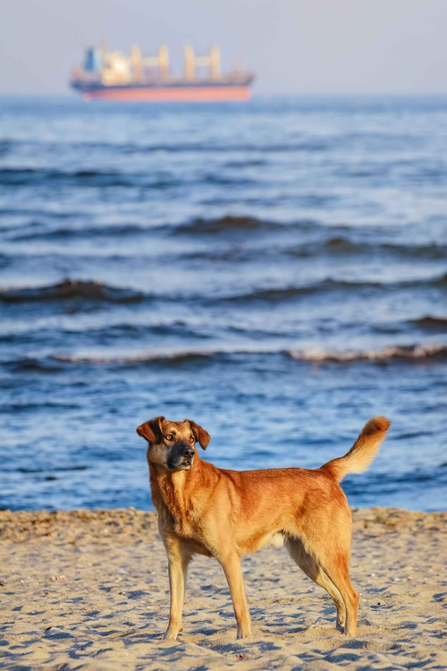
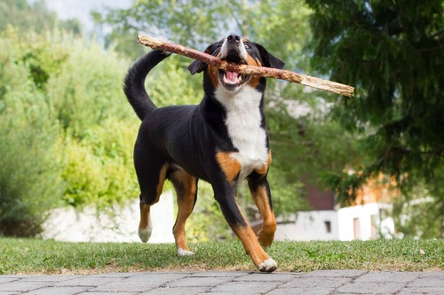

Adoptivdyr

Lucky
2 ½ år
Iherdig, Skarpsindig, Loyal, Energisk

Lucy
2 ½ år
ADOPTERET

Luna
4 måneder
Sød, energisk og vagtsom

Oscar
4 år
Nysgerrig, aktiv og intelligent

Nala
2 år
ADOPTERET

Rex
3 ½ måneder
Legesyg, kærlig og en rigtig putte gøj
Max
3 ½ måneder
Nysgerrig, legesyg & aktiv

Bailey
½ år
Sød, nysgerrig og udadvendt

Leo
3 ½ år
Glad, venlig og opmærksomhed søgende

Felix
4 år
Udadvendt, mad motiveret og venlig
Balder
2 år
ADOPTERET

Milo
2 ½ år
Legesyg, kærlig og livlig

Tilda
2 ½ år
Lege syg, intelligent og rar
Daisy
5 år
Putte gøj og korte gåture

Molly
2 år
Aktiv, meget legesyg og livlig
Se flere >